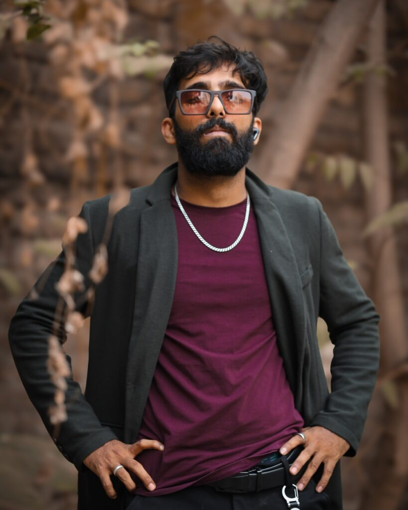
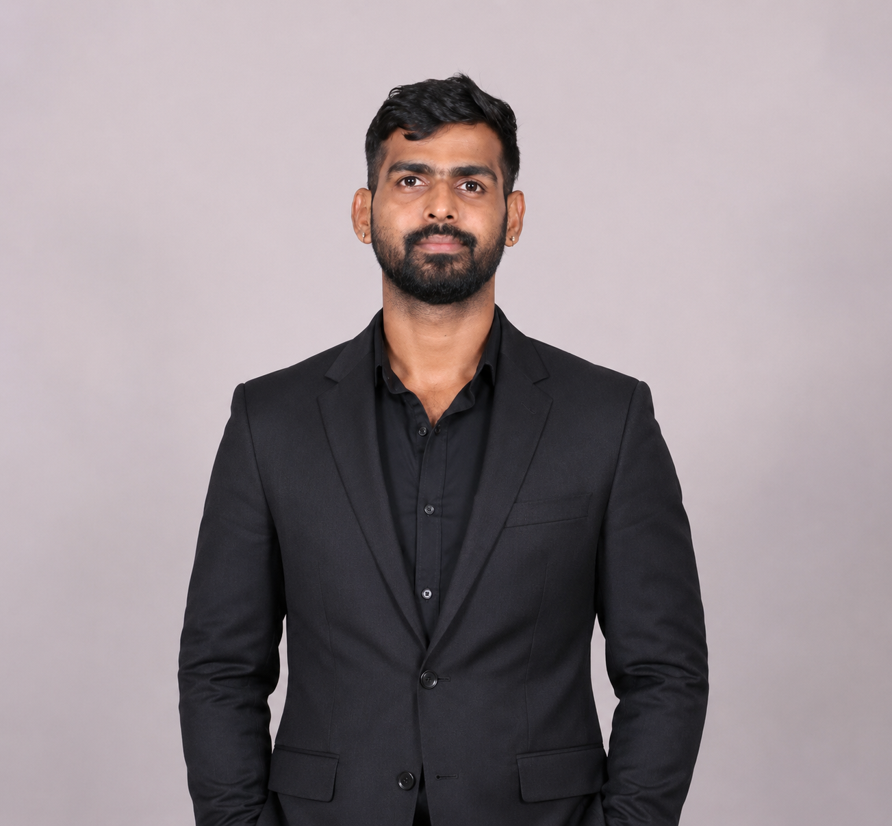
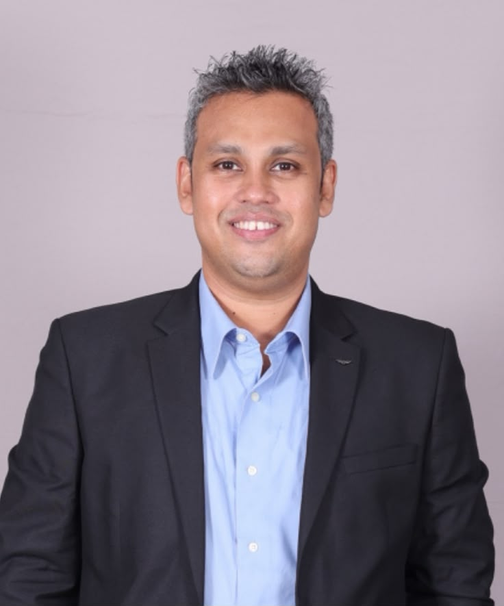

Warriors Dream Series is emerging as a national leader in mixed martial arts, rapidly establishing itself as one of India’s most influential MMA promotions. Built on a singular vision—to create a premier platform where Indian fighters can compete, evolve, and build enduring legacies inside the cage—WDS is redefining the competitive landscape of the sport in the country.
Driven by a deep passion for combat sports and the need for a structured, world-class competitive ecosystem, WDS has grown beyond an event platform into a movement shaping the future of Indian MMA. From showcasing elite professional athletes to nurturing grassroots amateur talent, the promotion delivers the stage, visibility, and high-performance environment required for fighters to excel.
Through its commitment to professionalism, athlete development, and sporting excellence, WDS is positioning India as a serious force on the global MMA map.
Our mission is to create a sustainable ecosystem where fighters can build credible, long-term careers through consistent high-quality competition, structured athlete development, and strong ecosystem partnerships.By combining operational excellence with deep passion for the sport, WDS is accelerating the mainstream adoption of MMA in India while inspiring a new generation of athletes and fans.
We are building more than a promotion — we are shaping a national movement that positions India as a serious force in global combat sports.
Warriors Dream Series was born from a simple belief: a nation of 1.42 billion people carries an untapped fighting spirit waiting for its stage.
Across India, raw talent trains in silence — in small gyms, crowded cities, and overlooked corners — dreaming of a platform worthy of their ambition. WDS brings that talent into the spotlight, creating a world-class arena where discipline meets opportunity and fighters are forged into champions.
Every event is more than a contest. It is a declaration that Indian MMA has arrived. Through uncompromising standards and unwavering commitment to our athletes, we are defining a new era for combat sports in India — inspiring a generation and positioning the nation as a formidable presence on the global stage.
This is not just a promotion.
This is the rise of Indian warriors.

Sanjivan Padwal is a driving force in Indian Mixed Martial Arts, recognized as a coach, promoter, and former professional fighter dedicated to the sport’s growth. As the founder and visionary behind Warrior’s Dream Series and owner of Fit and Fight Club, with branches in Navi Mumbai and Pune, he has built platforms that nurture both amateur and professional athletes. A BJJ Purple Belt and head coach at FFC, Sanjivan continues to shape the next generation of fighters. He also serves as President of the Navi Mumbai Mixed Martial Arts Association and has represented India as an international coach, strengthening the nation’s MMA ecosystem.

Sudhanshu is a seasoned investor with over two decades of expertise in Private Equity, Venture Capital, and listed market investments. He specializes in identifying and nurturing businesses that harness disruptive technologies, exhibit scalable potential, and create meaningful, positive impact. Within the listed markets, he seeks undervalued opportunities and ideas poised for significant re-rating, driven by transformative growth trajectories or strategic inflection points. Beyond his professional pursuits, Sudhanshu is deeply committed to continuous intellectual growth, devoting time to avid reading across diverse disciplines. He also maintains a disciplined and active lifestyle through his dedication to multi-martial arts and kettlebell training, reflecting his holistic approach to personal and professional excellence.

Sairaj is a skilled finance professional with Private Equity, Venture Capital, Capital Markets, and Corporate Banking expertise. His strengths include equity research, financial analysis, modeling, credit risk assessment, and transaction structuring. With a strategic mindset and meticulous approach, he focuses on identifying scalable businesses with strong competitive advantages to drive long-term value creation.

Leading end-to-end Fight Night operations, process development, cross-functional coordination and event execution at Warrior Dream Series, with a focus on building scalable and professional MMA event systems.Leading end-to-end Fight Night operations, process development, cross-functional coordination and event execution at Warrior Dream Series, with a focus on building scalable and professional MMA event systems.

Suvena Srivastav is a communications professional with a strong academic foundation in journalism, mass communication, and public relations, complemented by hands-on experience across political PR and non-profit content leadership. She brings strategic precision, sharp storytelling instincts, and a collaborative approach to every project she takes on.

Leading matchmaking and fighter relations at Warrior Dream Series, managing fighter coordination, bout planning, communication, and fight-week readiness to ensure professional and competitive MMA matchups.

Leading Fight Night logistics and event administration at Warrior Dream Series, overseeing travel, accommodation, transport, inventory, venue coordination, and operational support for seamless event delivery.

A marketing and communications professional with experience across financial services, entrepreneurship, and growth strategy, including roles with Tata Capital and ICICI Bank. As a 360° marketing professional and entrepreneur, he specializes in brand building, strategic partnerships, and integrated communications for with extensive experience in markets like India, UAE & the US. At Warriors Dream Series, he leads marketing and partnerships, developing strategies to grow the MMA community, strengthen brand collaborations, and create lasting stakeholder value.

Chirantan brings over 17 years of experience across sports, live entertainment, broadcast, and large-scale event operations. His expertise spans professional and combat sports, international concerts, sporting championships, government initiatives, and broadcast operations. A Founding Member and Vice President – Operations at SFA Sporting Services, he has led multi-city sports operations, while his Star Sports and Procam International experience includes major global sporting properties and iconic events. At Warriors Dream Series, he drives professional, athlete-first fight-night operations, building robust systems and internationally benchmarked execution standards.

A distinguished Chartered Accountant with over 25 years of experience across equity markets, fundamental research, and fund management. He has worked across both sell-side and buy-side research, offering a well-rounded perspective on investments. At IL&FS Group, he managed approximately $100 million for over a decade. His experience spans India Infoline, Sushil Finance, ICICI Securities, and Angel Broking, alongside strategic advisory and incubation across sustainability, consumer, media, entertainment, engineering, technology, and sports.

CA Piyush Agarwal began his professional journey with a stint at Star India before co-founding Mittal Agarwal & Company, Chartered Accountants. A Fellow Member of the Institute of Chartered Accountants of India (ICAI), he brings over 15 years of post-qualification experience across diverse industries and consulting assignments. Over the years, Piyush has advised a wide spectrum of clients, from global MNCs to SMEs, managing engagements end-to-end. His core expertise spans Income Tax Assessments and Appeals, Indirect Tax Advisory, and Consulting. Beyond his professional practice, he actively participates in management groups and industry associations. A sports fanatic, Piyush plays badminton religiously and brings the same discipline, energy, and competitive spirit to his professional pursuits.